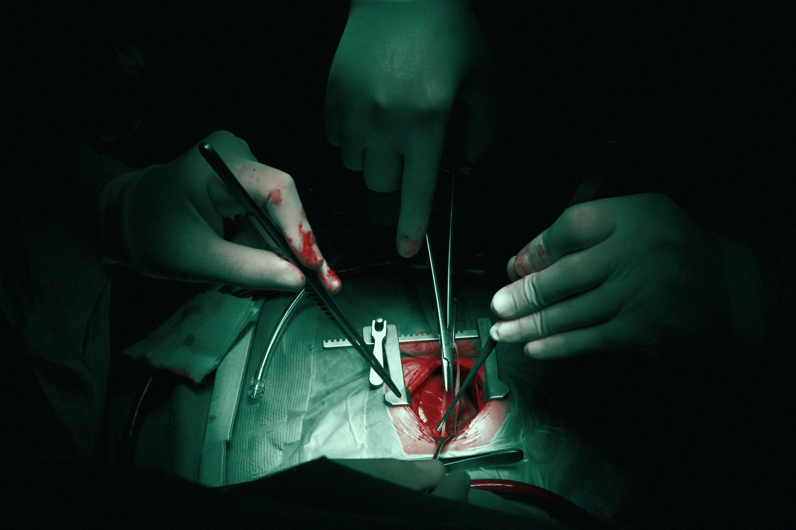
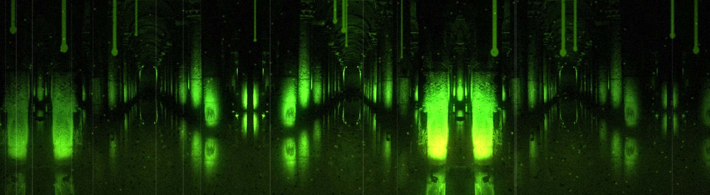
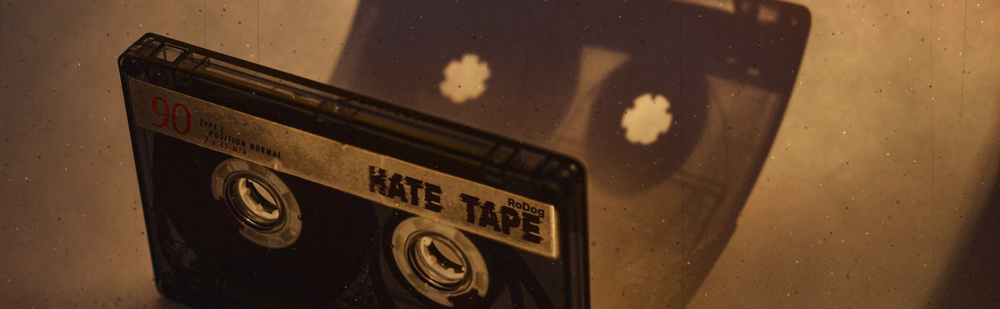

The Surgeon
Finds and removes harsh resonances as the music changes, plus four EQ bands on the analyser.
Installs through the RoDog Product Manager. VST3 & AU, macOS & Windows.
Features
Follows the music
Every resonance it finds gets its own cut, and the cuts move with the music. No fixed number of bands.
Detect
Side chain mode to make room for a vocal, stereo, linked, mid or side, transient protection and lookahead.
Four EQ bands
Low shelf, two bells and high shelf. Drag them right on the analyser.
DELTA
Hear only what is being removed.
More from the Brutal FX

Macabreverb
Nine reverb spaces with shimmer, freeze, tempo sync and MatchMe on the tail.

Abyssdelay
Seven delay modes, a rhythm pad that writes patterns, prime-number taps and MatchMe on the repeats.

Hate Tape
Tape and cassette machines, from 2-inch multitrack to VHS, with wear, wow and flutter, and tape stop.